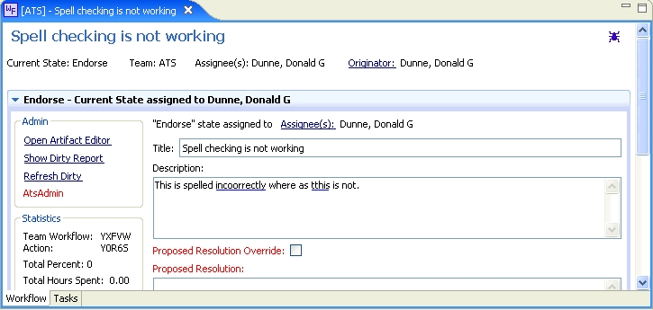

OSEE Spell Checking

Purpose
Enable data entered in OSEE to be spell checked.
How to do it
As data is entered into OSEE spell-checked fields, a blue line will be displayed if the word is not recognized.
Only lower-case words or words with only first character uppercase will be spell checked. Acronyms, words with
special characters, numbers and single letter words will be ignored.
Main Dictionary
OSEE has a main dictionary included in it's release. See below for it's source, copyrights and credits.
Additional Released Dictionaries
Additionally dictionaries can be added to OSEE via extension points. These can only be
modified by hand and thus included in normal release cycle.
Run-time Global Dictionary
Each OSEE user is able to add words to a Global dictionary stored in the database by right-clicking on the word
underlined in blue and selecting to save global. These words are stored in the "Global Preferences" artifact
and will then be shown as a valid word in all users's spell checking.
Run-time Personal Dictionary
Each OSEE user is able to add words to their Personal dictionary stored in the database by right-clicking on the word
underlined in blue and selecting to save personal. These words are stored in the user's "User" artifact
and will then be shown as a valid word only for that user.